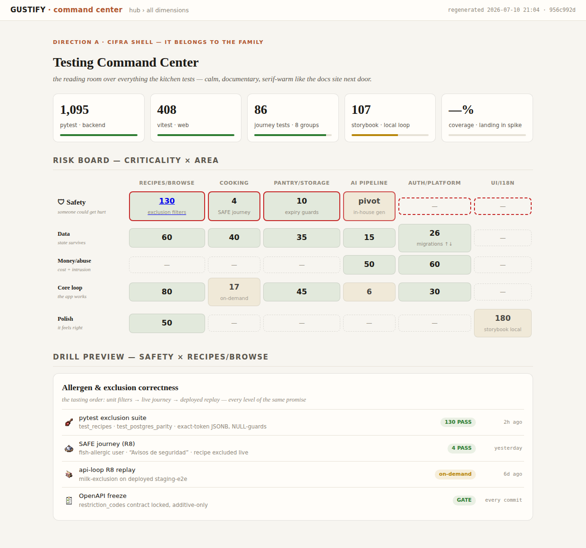
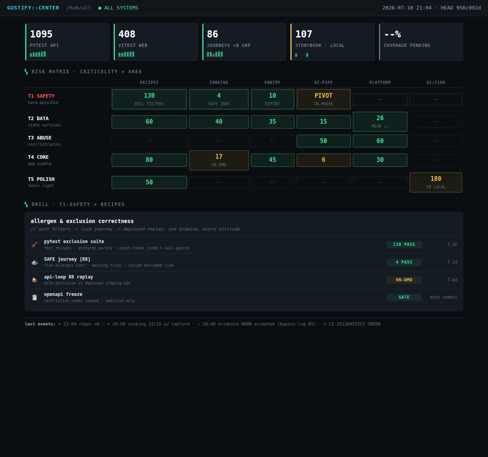
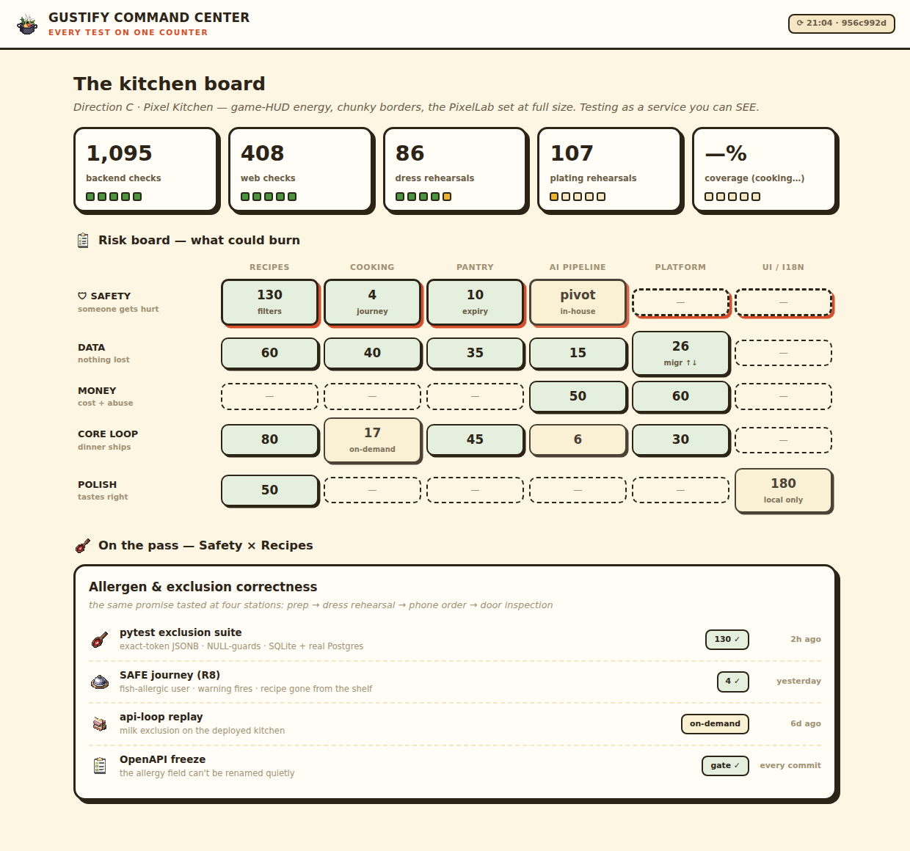
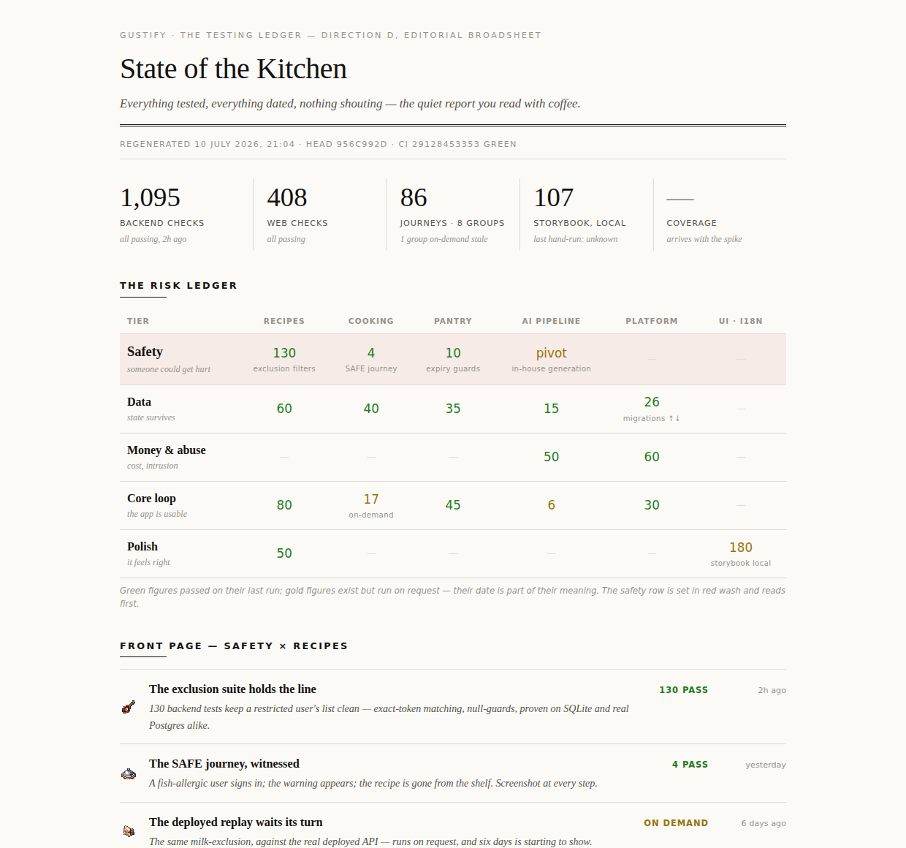
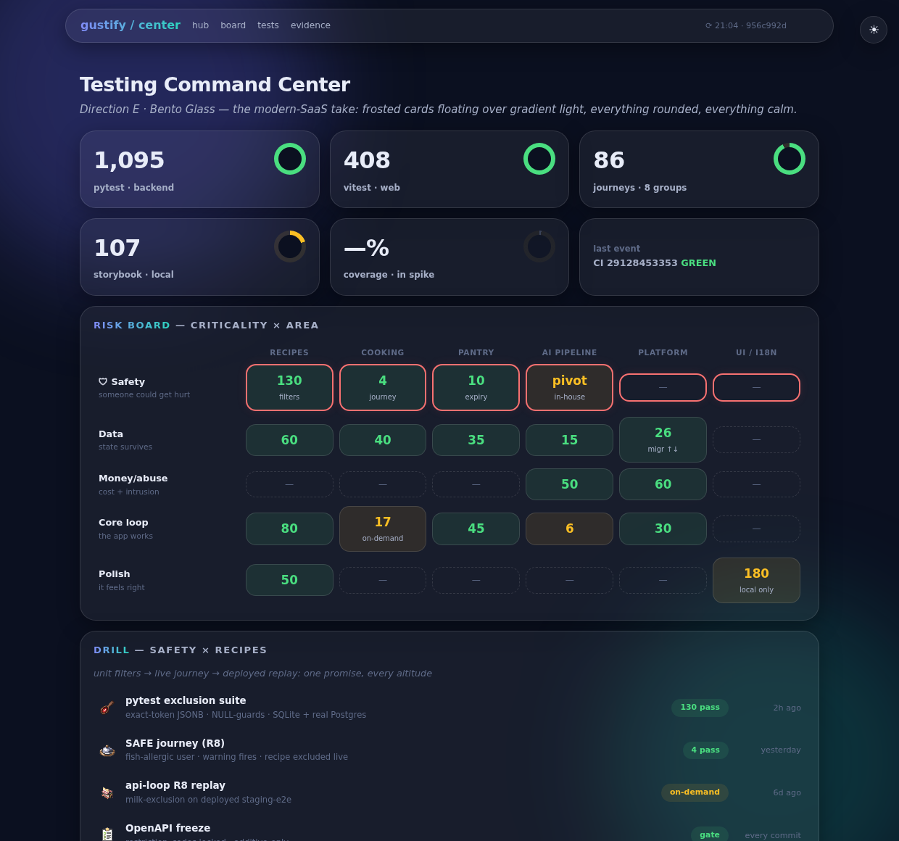
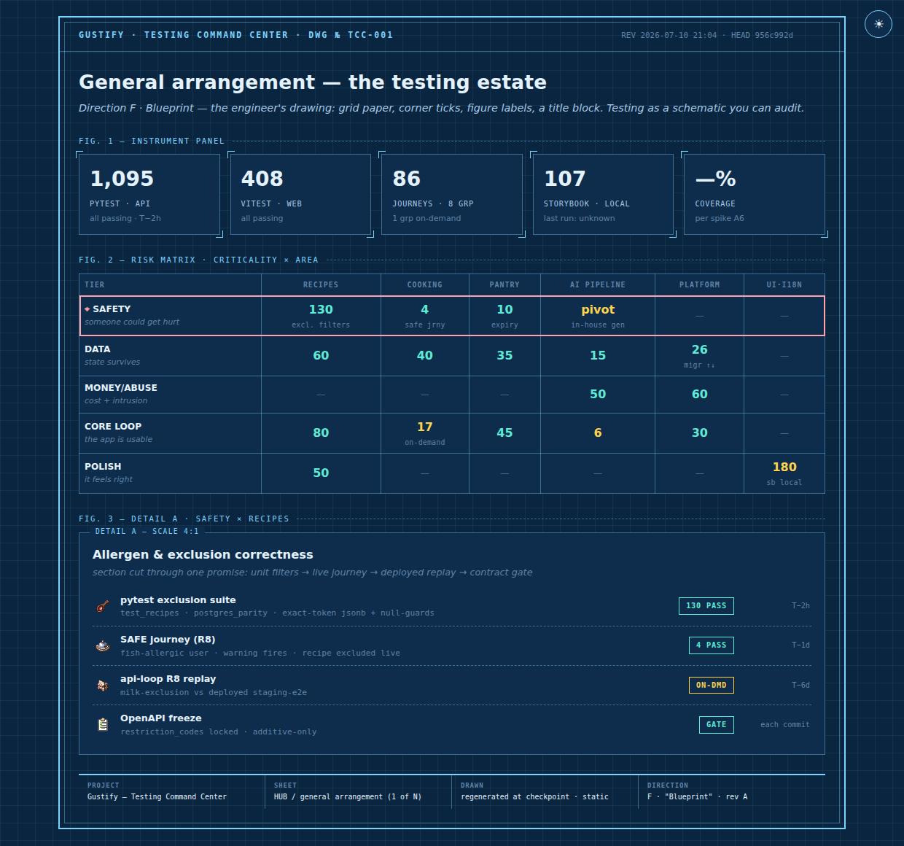
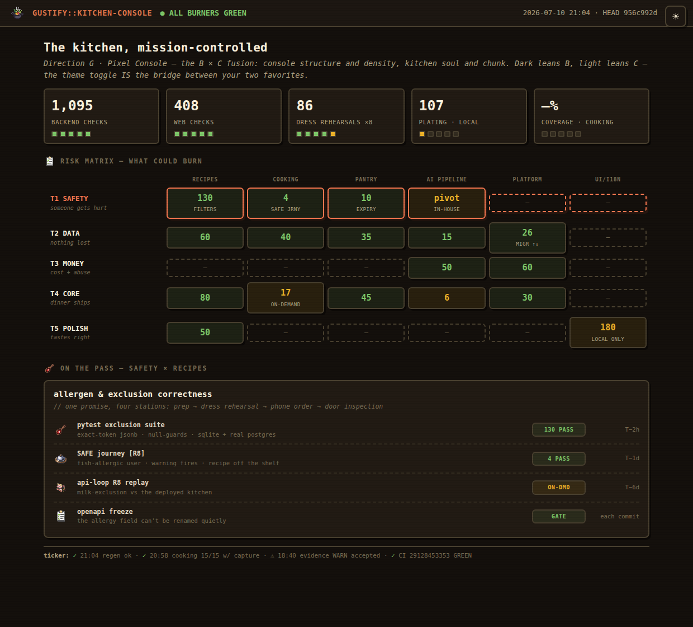
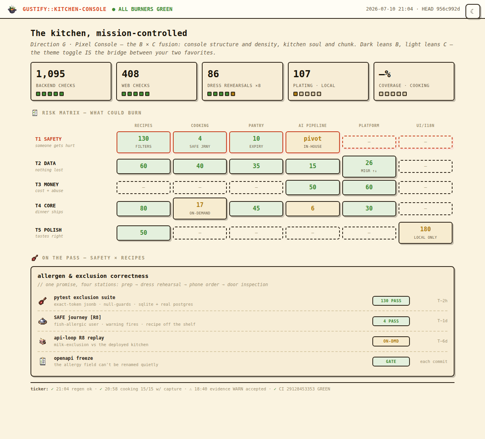

Investigation · 2026-07-10 · frontend direction — operator picks
Six skins, one command center ✓ FINAL (round 11): J · Station Card, light-only
FINAL (2026-07-10, round 11): "Use J". The center wears J · Station Card, light-only (Claude-designed, round 10: state left-rails, tab-chip headers, two-voice type; spec: 05-skin-spec.md). The round-5 pick below stays as the decision record: the center originally chose G · Pixel Console with the light theme as default (dark stays one ◐ away). Porting spec for the build: 05-skin-spec.md. Everything below stays as the decision record.
Round 8 — the full layout set, every skin: all four center layouts are now navigable with a top-right skin switcher (A–G, persisted as you move between pages), so the final skin call can be pressure-tested on real layouts, not just the hub: HUB (now with the three lenses: risk · levels · recency) · BOARD · TESTS · DRILL (new: a cell opened — four stations, evidence table, history sparkline, leaf links). G stays the provisional pick (★) until the operator re-confirms after touring these.
Round 9 — skin set reworked (operator): A (Cifra) and D (Editorial) are
discarded; B now renders its light console theme; two new skins take their slots, sourced
from the operator's reference sites: H · Swiss Studio (designprompts' International-style canon: white,
black rules, one red accent, zero ornament) and I · Gallery Hall (TheGallery's extracted system: warm-black
#0E0D0B, bone ink #EAE4D8, Bricolage-style display, five-color bar accents). Current set on the
switcher: B·light C E F G★ H I — tour via the multi pages.
The A–G cards below remain as the historical decision record.
Round 10: H, I, C discarded. G's legibility fixed — the mono-everywhere font was the "too spread out" culprit; G now reads in sans (titles/prose) with mono reserved for telemetry (spec rule 1 rewritten). New: J · Station Card — Claude's own design on request: the laminated line-cook checklist genre, state-colored left rails (thickest red on the safety row), dark tab-chip headers, big tabular numerals. Switcher now: B·light E F G★ J — tour.
Every mockup below is the same hub page with the same real data — the stat tiles, the criticality × area risk board, and one drilled cell (Safety × Recipes) — wearing four different personalities. The approved semantics never change between them (color = state · icon = kind · size/border = criticality · opacity/date = freshness · your PixelLab icons throughout). Only the look and feel moves. Click any screenshot to open the live mockup — each is a self-contained page that opens from disk, and every one now carries a ◐ theme toggle in the top-right corner: flip light/dark manually, and your choice persists across all the mockup pages (it overrides the system preference that was locking you into dark).

Cifra Shell — it belongs to the family
The docs-site's sibling: warm paper, serif headings, quiet chips. The center reads like another room of the documentation house you already have — zero visual context-switch from journey pages and ADRs.

Mission Console — the ops room
Dark-native, monospace, maximum density: LED sparklines, phosphor statuses, an event log at the bottom. Feels like monitoring a launch — everything on one screen, zero scrolling at desktop size. The strongest "command" energy of the four.

Pixel Kitchen — the game HUD
Chunky borders, hard drop-shadows, LED strips on the tiles, your PixelLab icons at full size — testing as a cooking game's status screen. The most FUN of the four, and the closest to gustify's own playful-geometric mockup heritage; the kitchen analogies live in the UI itself.

Editorial Broadsheet — the morning paper
Double rules, big serif figures, the drill rendered as front-page stories with headlines and deks. The calmest read — trends and risk as prose you'd read with coffee, not a wall of widgets. Lowest density, highest dignity; closest to TheGallery's editorial rooms.

Bento Glass — the modern SaaS
Frosted translucent cards floating over soft gradient light, a pill nav, progress rings, rounded-everything. The contemporary Linear/Vercel-era dashboard look — friendly, airy, and instantly familiar to anyone who lives in modern dev tools. Dark mode turns the glass luminous.

Blueprint — the engineer's drawing
Grid paper, corner ticks, FIG. labels, a title block — the estate rendered as a technical schematic you could audit with a ruler. Dark mode is a classic cyan-on-navy blueprint; light mode is blue ink on drafting paper. The most "this is an engineering document" of the six.
Side by side
| A · Cifra Shell | B · Mission Console | C · Pixel Kitchen | D · Editorial | E · Bento Glass | F · Blueprint | |
|---|---|---|---|---|---|---|
| One-line feel | another room of the docs house | launch control | cooking-game HUD | the morning paper | modern SaaS dashboard | engineer’s schematic |
| Information density | medium | highest | medium | lowest | medium | medium-high |
| Default mode | light-leaning | dark-native (+ real light) | light-leaning | light-leaning | both equally | dark = classic blueprint |
| Fit with existing docs/site | seamless | deliberate contrast | cousin (mockup heritage) | different register | different register | deliberate contrast |
| How criticality shows | red border weight | red tier label + glow border | red drop-shadow on tiles | red-wash row + bigger serif | red ring + soft glow | red outline + crosshair mark |
| Where it shines | living beside journey pages | deep work sessions, wall-screen | making testing feel rewarding | the daily glance, sharing a report | feeling like a real product | audits, deep inspection, printing |
| Watch out for | can feel "just more docs" | small text; alien next to Cifra pages | charm can cost gravitas at 300 specs | low density = more clicking to depth | blur costs perf on huge pages; trend-dated risk | ornament (ticks/figs) must not crowd data |
Mixing is allowed and cheap. These are skins over one semantic system, so hybrids are one CSS layer away — e.g. A's chrome with B's risk matrix ("family shell, console density"), or D as the hub with B as the drill pages ("calm at L0, dense at L2"). If one direction wins but you'd steal a piece of another, say which pieces — that's exactly how the final skin gets specified.
The B × C question (round 4) — resolved by round 5: G won, light default
Honest assessment: at the component level, B and C are opposites in five of six visual channels — border weight (hairline vs chunky), corner radius (sharp vs round), typography (mono vs heavy sans), temperature (cool cyan vs warm cream), density (max vs medium). A naive 50/50 blend produces mud. But this specific pair shares a root the other pairs don't: retro computing. A terminal and a pixel-art game are the same era of machine — so a deliberate fusion has a real anchor. Three honest ways to have both, priced:
| Path | What you get | Honest cost |
|---|---|---|
| G · the fusion (built below — judge it yourself) | ONE skin: B's structure, density, monospace and event ticker + C's chunky borders, hard shadows, LED blocks, warm palette and playful copy. And the elegant part: dark mode leans B, light mode leans C — the theme toggle becomes the bridge between your two favorites. | Fusion risk is real but paid already — the mockup exists; if it reads as "neither" to you, it dies here at zero further cost. |
| Skin toggle (both, intact) | B and C shipped whole as two CSS skins over the same pages, switched like the theme toggle. Zero compromise on either. | Every future component styled twice — roughly +20–30% on all frontend work of the center, forever. The data layer is unaffected (skins are pure CSS), so the guardrail survives. |
| Altitude split | C for the hub (the daily warm glance), B for the dense drill pages (tables, matrices). Each style where it's strongest. | Crossing an altitude boundary changes the whole visual world — can feel like two sites unless status colors, icons, and the topbar stay shared. Needs discipline, not more code. |

Pixel Console, dark = the B soul
Warm-black console: monospace, dense matrix, event ticker — but with C's LED blocks, chunky 2px borders, hard shadows, pixel icons, and "what could burn" microcopy. Kitchen colors on console structure.
Open mockup (toggle inside) →
Pixel Console, light = the C soul
The exact same page flipped light: cream paper, dark chunky lines, the same density and layout. One skin, two souls — flip the ◐ and watch B become C without anything moving.
Open mockup (toggle inside) →Where the work happens (your session question)
Recommended split, matching what you sketched: polish the look-and-feel HERE (this folder, fake-data mockups, fast iteration — no gustify writes, no session coordination needed) → once a direction is locked, the gustify session builds the real generator against live data per the spike plan (its writable surfaces: tests + docs/site + scripts). The handover artifact is small: the chosen mockup file IS the spec — the generator ports its CSS and fills it from real sources. COMMS carries the baton; nothing needs to run in both places.